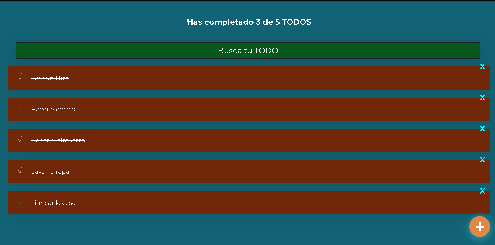

¡Hola!, soy Juan Diego Sastre Moreno, soy un desarrollador frontend, con experiencia basada en proyecto personales y aprendizaje autodidacta. Soy una persona curiosa que desde mi niñez se ha interesado por la tecnología web.
Sobre mi
Habilidades Tecnicas
Actualmente uso y manejo los siguientes lenguajes de programacion:
- Html
- Css
- GitHub
Proyectos
En esta seccion encotraras todos los proyectos que he hecho en mi carrera profesional como front-end devoloper:
Google Clone
Este fue mi primer proyecto que cree al iniciar como frontend developer. Está hecho con HTML y CSS, lo diseñé con el objetivo de poner en práctica lo que había aprendido.

TodoMachine
TodoMachine te permite hacer una lista de tareas, para que puedas mantener un orden de prioridades en tu vida cotidiana, es 100% funcional y es totalmente resposive lo que te permitirá usarlo desde el celular sin ningún problema. Este proyecto está hecho con React

Yardsale online
Yard sale es una simulación de tienda online, la cual es interactiva, permite ver que productos están a la venta, interactuar con un carrito de compra es totalmente resposive. Este proyecto está construido con Html, Css y Javascript